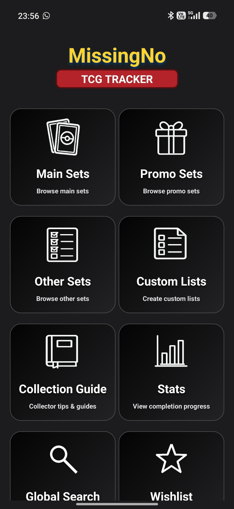
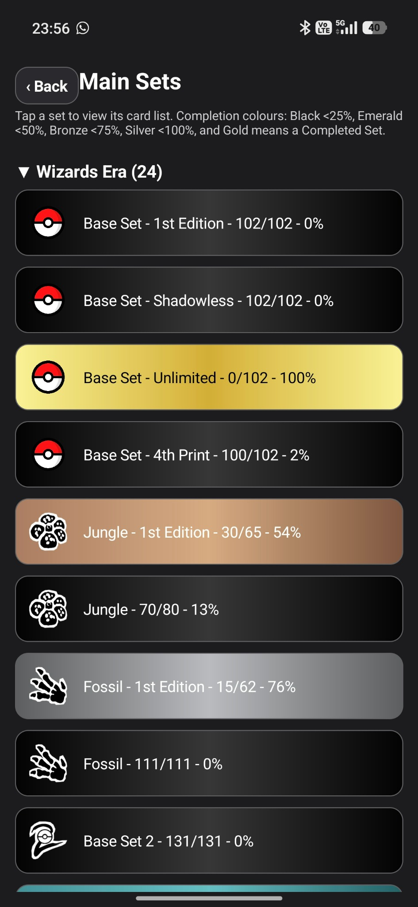
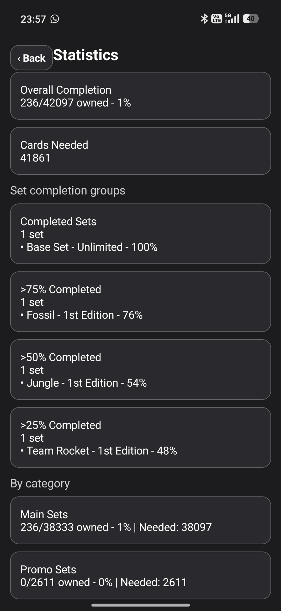

Unofficial collector companion app
Track the Pokémon TCG cards you still need.
MissingNo TCG Tracker helps collectors organise sets, monitor completion, create custom lists, and stay focused on the cards missing from their collection.
Get support
Features
Missing-card focus
Designed around what you still need, not just what you already own.
Designed around what you still need, not just what you already own.
Set progress
View completion percentages and organise cards by set and era.
View completion percentages and organise cards by set and era.
Statistics
See collection progress and completed-set breakdowns at a glance.
See collection progress and completed-set breakdowns at a glance.
Custom lists
Create focused lists for favourite Pokémon, goals, or special collections.
Create focused lists for favourite Pokémon, goals, or special collections.
Screenshots




MissingNo TCG Tracker is not affiliated with, endorsed by, or sponsored by Nintendo, Creatures Inc., GAME FREAK, or The Pokémon Company.